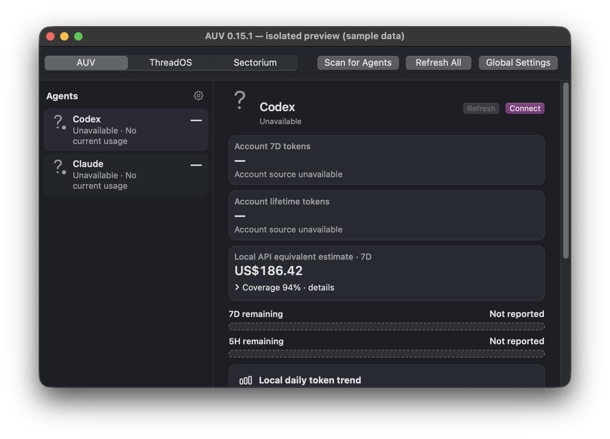

AUV
Agent Usage ViewerSee usage. Set your team. Manage your development drive.
Check AI account usage at a glance. Use ThreadOS to prepare coding-team instructions. On Mac, Sectorium loads and unloads your development volume and safely disconnects its external drive.
Download for Windows · v0.16.3
Windows 11 · x64 · portable ZIP · unsigned
Download for macOS · v0.17.4
macOS 14+ · Apple silicon + Intel · signed and notarized
Behind the project
- What it is for
- One app for account usage, team instructions and Mac development volumes.
- How to start
- Install AUV, then sign in to the Codex app to view its account usage. The guides explain team setup and development drives.
- What’s new on Mac
- 0.17.4 fixes the cost panel added in 0.17.3, which could appear even with its Token Cost Estimate switch off. The 0.17.3 additions are unchanged: low-remaining colour on Claude’s quota bars once you state your plan, the menu bar number when Codex reports none, reset times in the menu bar panel, and a local API-equivalent cost estimate. Windows remains 0.16.3; its Sectorium storage actions are unavailable.
